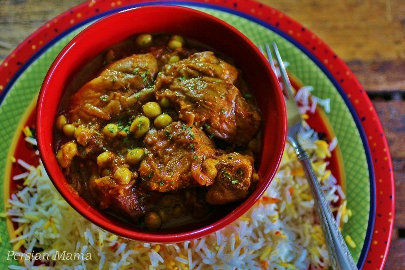

Bademjan
Return to main page

This image and all recipe contents are borrowed from the blog, Persian Mama,
for the purpose of this project. I do not take credit for any of Homa's work,
but I highly recommend trying it!
See Original Recipe Here
- 1 pound cross rib roast or any similar beef, cubed
- ½ large onion, leave whole
- 1 tsp turmeric powder
- ½ tsp ground black pepper
- 3 cups water
- 1 large onion sliced thin and fried to golden brown in 3 TBSP vegetable oil (4 ounces fried onions)
- 3 TBSP tomato paste
- 7-10 medium Indian eggplants, peeled and baked (follow instructions for Baked Eggplant) or 5-6 medium Italian eggplants
- 1 cup frozen sour grapes (Do not thaw). May substitute with fresh or pickled sour grapes (drained), 4 crushed limoo amani (dried Persian lime), or 3-4 TBSP fresh lime, or lemon juice, or sour grape juice.
- 1 tsp kosher salt
- ⅛ tsp saffron powder (optional)
- Add the cubed beef, water, turmeric powder, ground black pepper, and the onion half to a medium stockpot. Bring it to a boil, then reduce the heat to medium low (must maintain a slow boil) and cook covered for 1-1 ½ hours, or until the beef is fork tender. Discard the onion. As an alternative method, if you own a pressure cooker, you may follow your owner's manual for safety instructions and cook the above ingredients in the pressure cooker for 15 minutes after the pressure regulator starts to rattle. Discard the onion and proceed with the rest of the recipe.
- Meanwhile bake the eggplants in a preheated oven according to the Baked Eggplant instructions on the How-To section of my blog.
- At the same time heat 3 TBSP vegetable oil In a 12-inch nonstick skillet and fry the thinly sliced onions over medium heat until golden brown.
- Add 3 TBSP tomato paste to the fried onions and saute over medium low heat for 5 minutes until aromatic.
- Add the broth of the cooked beef and 1 tsp kosher salt to the skillet and stir to incorporate with the onion mixture and bring it to a boil to make a sauce.
- Add the cooked beef, baked eggplants, sour grapes, and the optional saffron to the skillet and bring it to another boil. There should be about 1½ inches of sauce in the skillet, add extra water if needed but only in small amounts so the sauce is not watered down. Reduce the heat to medium low and simmer for 45 minutes to an hour until the sauce has thickened and the beef and eggplants are very tender. Adjust salt to taste.
- Serve over Persian white rice.